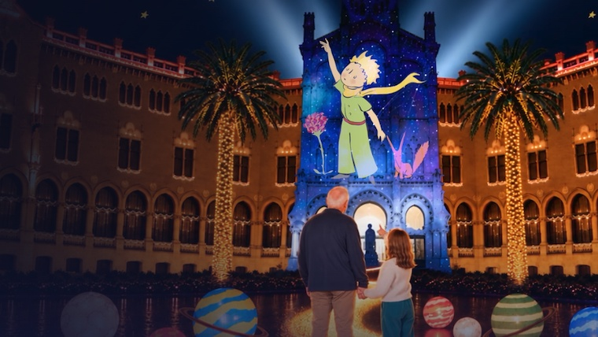
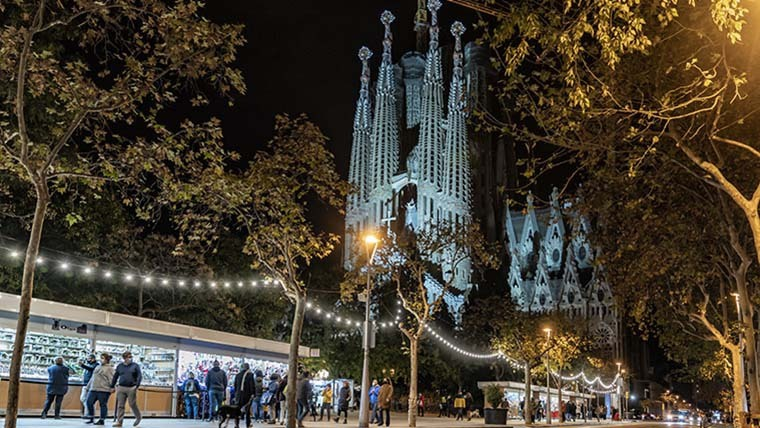
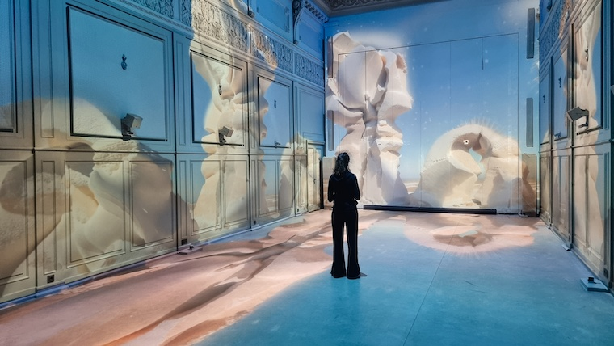
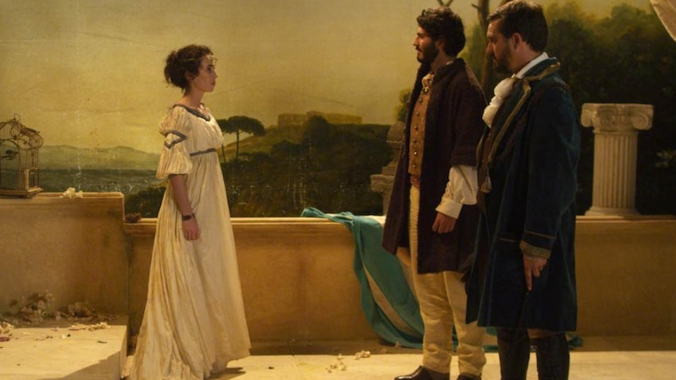
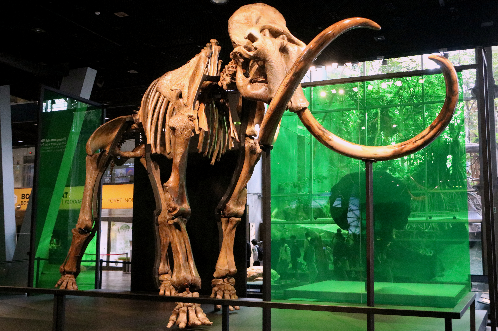
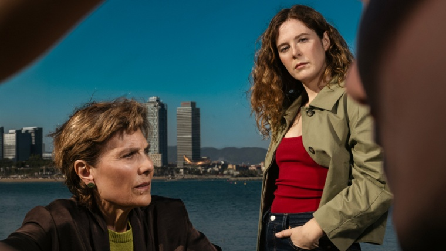
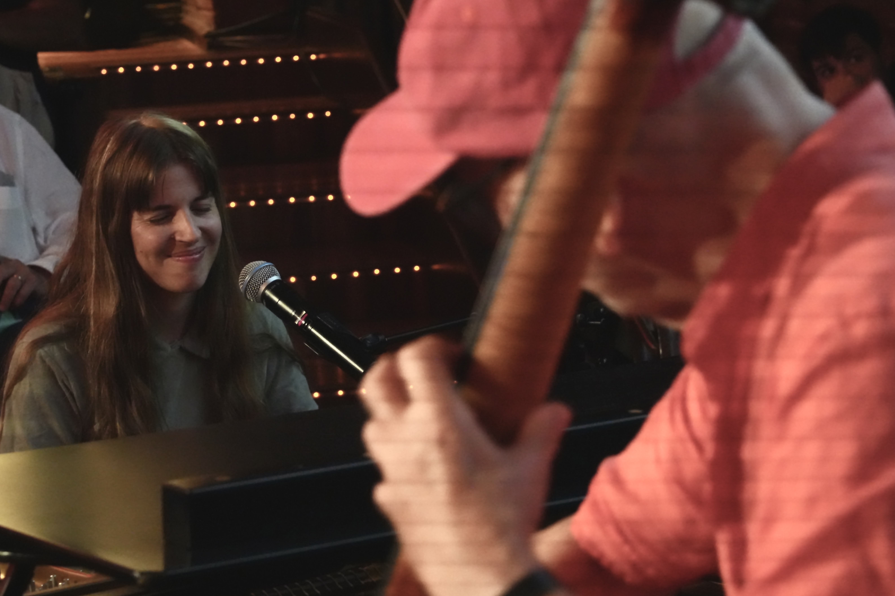

08-Oct-2026 to 19-Dec-2026
Barcelona community centres
Live arts. A free program of theater, circus, music, and dance performances across 36 stages in civic and cultural centers throughout the city's districts. The Escena series will present 145 theater,
15-Oct-2026 to 27-Dec-2026
Granollers, Terrassa, Barcelona, Vic
The 10th Panoràmic festival of visual arts and cultures brings 25 exhibitions and nearly 50 free activities to Granollers, Terrassa, Barcelona, and Vic. To mark the 200th anniversary of photography, t
18-Nov-2025 to 14-Mar-2027
Barcelona
19-Nov-2026 to 10-Jan-2027
Barcelona

19-Nov-2026 to 10-Jan-2027
Barcelona

21-Nov-2026 to 23-Dec-2026
Barcelona

24-Nov-2026 to 14-Mar-2027
Barcelona

24-Nov-2026 to 15-Dec-2026
Barcelona
26-Nov-2026 to 05-Jan-2027
Barcelona

26-Nov-2026 to 26-Dec-2026
CosmoCaixa, Barcelona
Barcelona's CosmoCaixa Science Museum unveiled the latest addition to its exhibition: a large six-meter-long and 3.5-meter-tall Siberian mammoth. The mammoth is between 40,000 and 50,000 years old and

26-Nov-2026 to 03-Jan-2027
Barcelona

30-Sep-2026 to 23-Dec-2026
Barcelona
This year's 58th edition opens as organizers prepare a bid, with the Catalan Government and Barcelona City Council, to make the city the international jazz capital in 2028. Between now and the end of